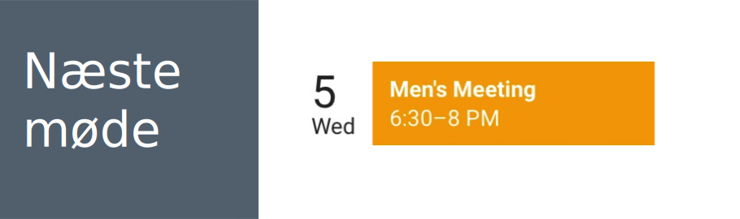

Vælg kollegaer til feedback
Vælg to kollegaer til at give dig feedback på dit skema, der vil blive tilsendt en notifikation når de har givet dig feedback.





Vælg to kollegaer til at give dig feedback på dit skema, der vil blive tilsendt en notifikation når de har givet dig feedback.